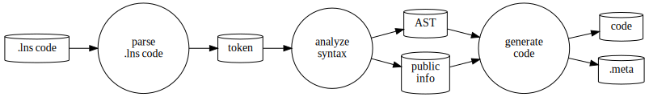
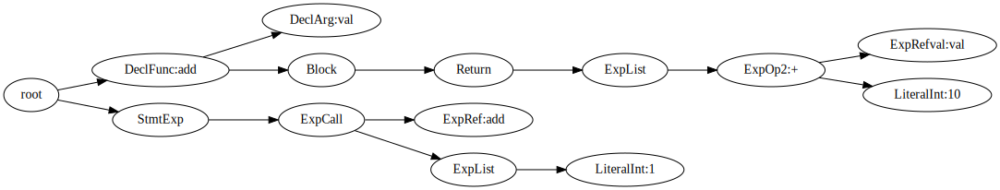

Y.1 How to develop LuneScript
Describe the development of LuneScript itself.
LuneScript has grown to a decent scale, and I have a hard time remembering it when I have time, so I leave it as a memorandum.
Of course, if other people are interested in developing LuneScript, that's fine.
Development environment
LuneScript development is done on Ubuntu. However, if you use Linux, you can build it if you prepare the environment a little.
Personally, I think Windows is an environment for playing with GUI tools, or an environment for using MS Office, not a programming environment.
However, I think WSL is wonderful, and the LuneScript development environment Ubuntu that I usually use is also Ubuntu on WSL.
build
Builds are managed by Make.
As will be described later, testing is also done with Make.
build environment
The following environment is required for the build.
- liblua5.3-dev
- lua5.3
- go 1.16 or newer
- gcc
In the case of Ubuntu, the environment can be set up simply by apt-installing the above. On the other hand, if you are not on Ubuntu, you need to change the Makefile accordingly.
All builds are done in the src directory.
$ cd src
The following description assumes that you work in the src directory.
Build method
LuneScript is developed by self-host. In other words, you need the LuneScript compiler lnsc to build LuneScript.
Also, LuneScript has a lua version that runs on the lua VM and a go version that compiles native code with go. And the go version of lnsc is not managed by git.
Therefore, in the state cloned from git, it is necessary to build using the lua version.
However, the lua version takes more than 10 times longer than the go version, so building using the lua version is inefficient in development.
So, first, build the go version of LuneScript using the lua version of LuneScript.
How to build LuneScript for go
The go version of LuneScript can be built with the following command.
$ make go-build
This will generate src/lnsc .
In addition, if you specify the following options to go-build below, gopherlua will be used for the Lua runtime.
$ make go-build GOTAG=gopherlua
By using the gopherlua version, it becomes a pure go program, so it should be easy to run in environments other than Linux.
But I've never tried it myself.
In particular, / is used as the fixed directory path delimiter, so if you actually use LuneScript in an environment other than Linux, you will need to deal with that.
Build method using go version LuneScript
To self-host using the go version of LuneScript, execute the following command.
$ make -j test-comp-with-go LUA=
The target of test-comp-with-go does the following:
- Self-hosted build
- Run tests for built lnsc
- If there are no errors in the tests, replace the newly built lnsc and transcompiled .lua files with the current ones.
Note that if any error occurs, the lnsc and .lua files will not be replaced, so even if a bug occurs during the LuneScript development process, development can be safely continued.
If you update lnsc without detecting an error in the test, self-host itself will not be able to proceed normally, and development will not proceed.
I wrote about this in the next topic, so if you are interested, please refer to it.
Note that -j in the above command is an option that uses make's parallel processing, and is used to speed up the build.
If some kind of error occurs during the build, it is often easier to track down the error by running without this -j specification.
Also, LUA= in the above command means to convert to lua code for Lua5.1.
Since lua5.1 and lua5.2 or later LuneScript sources are partially incompatible, only Lua5.1 needs to be built separately.
However, it naturally takes time to build and test Lua5.1.
Therefore, usually LUA= is specified to exclude Lua5.1 tests, and LUA= is removed before the final release to build.
To test with lua5.1, you need to install the following packages in advance.
- lua5.1
- liblua5.1-0-dev
To self-host with the lua version without using the go version, execute the following command.
$ make -j test-comp LUA=
allow test diffs
In the self-hosted build test above, error checking is performed by diffing the execution result of the existing lnsc and the execution result of the newly built lnsc to check for differences.
This test mainly includes the following checks.
- Testing code that should work normally
- Testing code that should detect errors
On the other hand, if you're self-hosting LuneScript, it's sometimes correct to have a diff.
For example, when the syntax error check of LuneScript is tightened and a new error occurs, there will be a difference in the error message between the test result of the existing lnsc and the test result of the newly built lnsc.
If such a difference is treated as a test error, it will not be possible to proceed further.
The method for allowing this difference is the following command.
$ make accept-package [WITH_GO=y]
After executing the above command, the diff is displayed again, and the following prompt is displayed.
accept? (y/n):
Typing y here will allow the diff and treat the newly built lnsc as normal.
Note that if you allow a difference, you cannot undo it (it can be restored if the previous state is kept in git), so be careful when allowing a difference.
source configuration
Sources of LuneScript are managed under src/lune/base.
- lune/base
- lune/base/runtime_go
Basically, lune/base contains all LuneScript sources, and lune/base/runtime_go contains runtime control of the go version of LuneScript.
Most of your LuneScript development will involve modifying the .lns files in lune/base.
Categories of sources
Sources of LuneScript are divided into the following categories according to their processing contents.
-
overall control
- Option.lns
- front.lns
-
Asynchronous processing
- Async.lns
- Runner.lns
-
type definition
- Ast.lns
- Builtin.lns
- Types.lns
-
token parsing
- AsyncParser.lns
- Parser.lns
-
Parsing
- frontInterface.lns
- LuneControl.lns
- BuiltinTransUnit.lns
- Import.lns
- Macro.lns
- Meta.lns
- Nodes.lns
- AstInfo.lns
- TransUnit.lns
- TransUnitCtrl.lns
- TransUnitDecl.lns
- TransUnitExp.lns
- TransUnitIF.lns
- TransUnitStatementList.lns
- TransUnitTest.lns
-
code conversion
- NodeIndexer.lns
- Converter.lns
- Writer.lns
- convGo.lns
- convLua.lns
- convPython.lns
- dumpNode.lns
- glueFilter.lns
- Formatter.lns
- OutputDepend.lns
-
Lua-related
- LuaMod.lns
- LuaVer.lns
- DependLuaOnLns.lns
-
test related
- Testing.lns
- TestingMacro.lns
-
others
- GoMod.lns
- Code.lns
- Depend.lns
- Json.lns
- Log.lns
- Str.lns
- Util.lns
- Ver.lns
TransUnit.lns will likely be the most modified file as you proceed with LuneScript development.
In addition, when adding a new language to the language to be transcompiled, conv???.lns will be defined.
flow
The processing flow is roughly as follows.
- Token generation with lexical analysis
- AST generation with parsing
- Code conversion from AST to target language
Front.lns controls this entire flow.
digraph G {
rankdir=LR;
parse [shape="circle",label="parse.lns code",fontcolor="#000000";];
syntax [shape="circle",label="analyzesyntax",fontcolor="#000000";];
conv [shape="circle",label="generatecode",fontcolor="#000000";];
lns_code [shape="cylinder",label=".lns code",fontcolor="#000000";];
token [shape="cylinder",label="token",fontcolor="#000000";];
ast [shape="cylinder",label="AST",fontcolor="#000000";];
decl [shape="cylinder",label="publicinfo",fontcolor="#000000";];
code [shape="cylinder",label="code",fontcolor="#000000";];
meta [shape="cylinder",label=".meta",fontcolor="#000000";];
lns_code -> parse;
parse -> token;
token -> syntax;
syntax -> ast;
syntax -> decl;
ast -> conv;
decl -> conv;
conv -> code;
conv -> meta;
}
Lexical analysis
Lexical analysis extracts pre-registered words from a given character string to generate tokens.
At this time, the position information in the character string where the token appears and the following type information are added to the token.
- Cmnt (comment)
- Str (string)
- Int (integer)
- Real
- Char (character)
- Symb (symbol)
- Dlmt (delimiter)
- Kywd (keyword)
- Ope (operator)
- Type
- Sheb (Shebang)
For example, lexing the following code:
// @lnsFront: skip
print( "hoge" );Generate the next token.
| No | kinds | line | column | string | |
|---|---|---|---|---|---|
| 1 | Symb | 1 | 1 | ||
| 2 | Dlmt | 1 | 6 | ( | |
| 3 | Str | 1 | 8 | "hoge" | |
| 4 | Dlmt | 1 | 15 | ) | |
| 5 | Dlmt | 1 | 16 | ; |
AsyncParser.lns does this processing.
Parser class
Parser class is a class that performs the above lexical analysis.
// @lnsFront: skip
pub abstract fn getToken() mut : &Token!;Token can be obtained by calling getToken() method. By calling this getToken() sequentially, Tokens to be analyzed can be enumerated.
PushbackParser Interface
PushbackParser interface is an interface that supports push back.
push back has a function that pushes back the Token obtained by getToken() and enables the Token to be obtained again when getToken() is performed next time.
This function is used for syntactic analysis.
For example, when parsing code like
// @lnsFront: skip
if val {
}
print();- After parsing
}of theifstatement, get the next tokenprintto see if theelseclause follows. - Since
printis notelse, the tokenpush backcompletes the parsing of theifstatement. - Then get the next token to parse the next sentence.
- The token obtained here will be
print, which waspush backearlier.
Parsing
Based on Token obtained from Parser, analyze LuneScript syntax and generate AST.
For example from the following code:
// @lnsFront: skip
fn add( val:int ) : int {
return val + 10;
}
add( 1 );Generate the following AST:
digraph G {
rankdir=LR;
root;
DeclFunc[ label="DeclFunc:add"];
DeclArg[ label="DeclArg:val" ];
Block;
Return;
ExpList1[label="ExpList"];
ExpOp2[ label="ExpOp2:+"];
ExpRefval[ label="ExpRefval:val"];
LiteralInt_10[ label="LiteralInt:10"];
StmtExp;
ExpCall;
ExpRef[ label="ExpRef:add"];
ExpList2[label="ExpList"];
LiteralInt_1[label="LiteralInt:1"];
root->DeclFunc;
DeclFunc->DeclArg;
DeclFunc->Block;
Block->Return;
Return->ExpList1;
ExpList1->ExpOp2;
ExpOp2->ExpRefval;
ExpOp2->LiteralInt_10;
root->StmtExp;
StmtExp->ExpCall;
ExpCall->ExpRef;
ExpCall->ExpList2;
ExpList2->LiteralInt_1;
}
Parsing not only produces an AST, but also:
- Grammar error check
- Argument type checking
- type inference
- Variable uninitialization check
- Same name symbol overload check
- Inheritance check
- mutable, immutable check
- macro expansion
- import processing
- etc…
It can be said that this is the most important processing of the transcompiler.
In LuneScript, within the parsing process,
- Processing Completion Queries
- Processing type information queries
It also performs inquiry processing used for emacs linkage such as.
code output
Output from the AST to the destination code.
For example, from the AST
Outputs the following Lua code.
--mini.lns
local _moduleObj = {}
local __mod__ = '@mini'
local _lune = require( "lune.base.runtime7" )
if not _lune7 then
_lune7 = _lune
end
local function add( val )
return val + 10
end
add( 1 )
return _moduleObjWhen converting to Lua, the target code can be output basically just by outputting the AST structure as it is. cannot be generated.
This is because of the large difference in language design between LuneScript and go.
The outline is as above.
However, this is the foundation of the foundation.
Next, I plan to explain a little more about the internals.